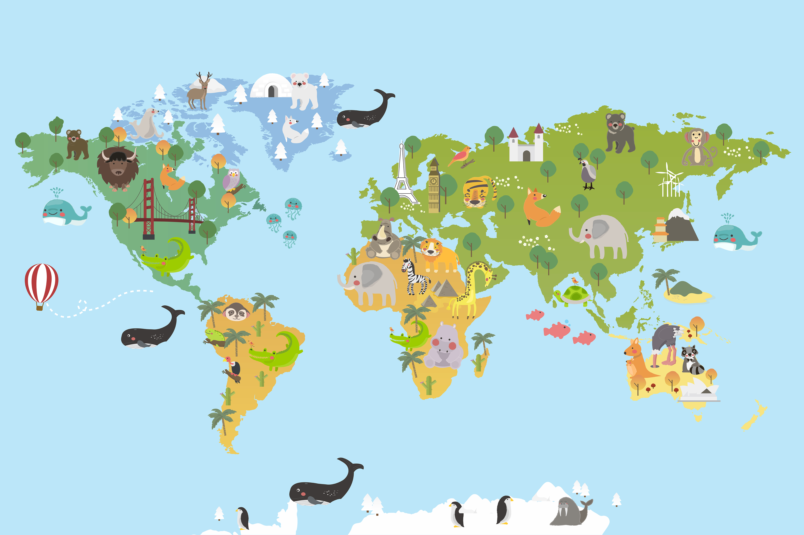

¿Qué son los biomas?
Un bioma o dominio bioclimático es una zona de la Tierra donde predominan un tipo de clima y una vegetación
que favorecen el desarrollo de determinados seres vivos.
Sus características determinan el desarrollo de la fauna, aunque la capacidad de movilidad de los animales
hace que puedan extenderse fuera de la zona que les es propia.
Los biomas son regiones muy extensas, de miles o millones de kilómetros cuadrados, es difícil definir los límites
entre biomas, ya que no están separados por fronteras concretas, sino por zonas de transición que presentan
características intermedias.
Podemos distinguir, a grandes rasgos, los siguientes biomas terrestres:
• las selvas tropicales • las sabanas
• los desiertos cálidos • los bosques mediterráneos
• los bosques caducifolios • las estepas
• la taiga • la tundra
